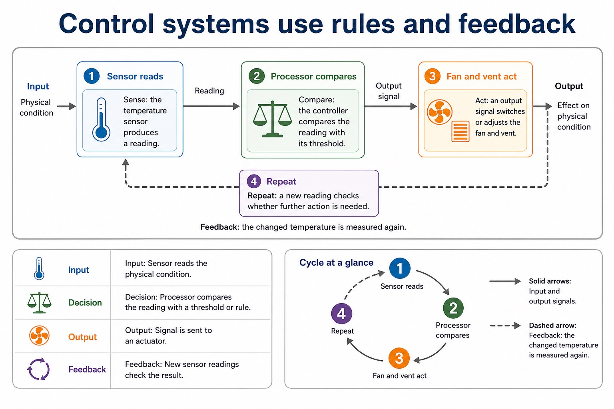
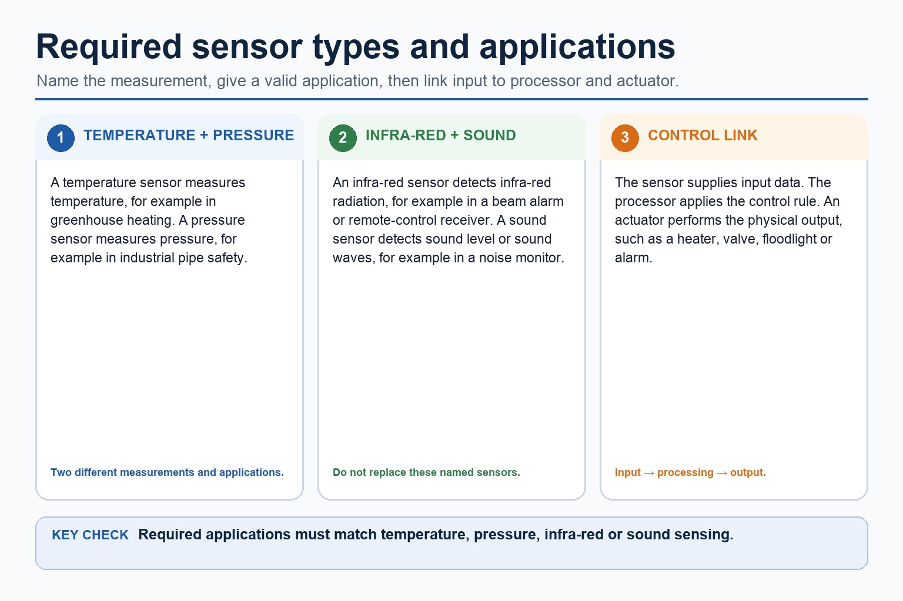

S3.08, S3.09 | Visual relationships, mechanisms and worked examples.
Quickdiagnose + essentials
Fullcomplete explanation
Deepprerequisites + extension
Choosepractice by need
Teacher choice
Choose the depth for this group
Quick route
Use the diagnostic, learning objectives, first worked example and foundation question. Stop once the learner can explain the central distinction accurately.
Full route
Teach every knowledge-point material set, the worked method and all lesson questions.
Deep route
Add the prerequisite refresher, ask learners to connect the concept checklist, discuss the labelled extension and complete a transfer question without a model answer.
Part 1 | optional depth
Prerequisite knowledge and quick diagnostic
Recall S3.08 before starting this lesson.
Give one accurate definition or method step before continuing. If it is missing, revisit only that prerequisite.
Open optional prerequisite refresher
Show understanding of monitoring and control systems, including the difference between monitoring and control, the use of sensors and actuators, and the importance of feedback.
Distinguish monitoring and control; understand sensors, actuators and feedback.
Part 2 | visual explanation
Learn each point through visuals
Use the relationship map, mechanism and concrete cue before opening precise wording.
01
S3.08 · comparison
Monitoring and control; understand sensors, actuators and feedback
Concept relationships
monitoringMonitoring and control systems, including the difference between…
controlIn closed-loop control, feedback is the new sensor…
sensorsSensors, actuators and feedback.
actuatorsActuators produce physical output actions such as moving…
feedbackFeedback New sensor readings check the result.
See how it works
Identify
Name both alternatives precisely
Monitoring and control systems, including the difference between monitoring and control, the use of sensors and actuators, and…
Contrast
Connect structure to consequence
Sensors, actuators and feedback.
Choose
Justify against the scenario
In closed-loop control, feedback is the new sensor reading produced after the action, allowing the controller to adjust…
S3.08 diagrams
01
Diagram · 1 of 1
Control systems use rules and feedback

Open text transcript
1 Sensor reads
2 Processor compares
3 Fan and vent act
The solid arrows show input and output signals. The dashed arrow shows feedback: the changed temperature is measured again.
Sense: the temperature sensor produces a reading.
Compare: the controller compares the reading with its threshold.
Act: an output signal switches or adjusts the fan and vent.
Repeat: a new reading checks whether further action is needed.
Input Sensor reads the physical condition.
Decision Processor compares the reading with a threshold or rule.
Output Signal is sent to an actuator.
Feedback New sensor readings check the result.
Open precise syllabus wording
Distinguish monitoring and control; understand sensors, actuators and feedback.
Show understanding of monitoring and control systems, including the difference between monitoring and control, the use of sensors and actuators, and the importance of feedback.
02
S3.09 · process
Temperature, pressure, infrared and sound sensors and appropriate applications
Concept relationships
sound sensorTemperature, pressure, infrared and sound sensors and appropriate…
infraredRequired sensor types are temperature, pressure, infra-red and…
temperatureA temperature sensor measures temperature, a pressure sensor…
pressureTemperature for a greenhouse, pressure for a tyre…
soundA light-intensity sensor is useful supporting context but…
See how it works
Input
Identify incoming data or signal
Temperature, pressure, infrared and sound sensors and appropriate applications.
Mechanism
Follow the physical or logical path
Required sensor types are temperature, pressure, infra-red and sound
Result
Connect output to its use
A temperature sensor measures temperature, a pressure sensor measures force per unit area or pressure, an infra-red sensor…
S3.09 diagrams
01
Diagram · 1 of 1
Required sensor types and applications

Open text transcript
A temperature sensor measures temperature and a pressure sensor measures pressure.
An infra-red sensor detects infra-red radiation, for example in a beam alarm or remote-control receiver.
A sound sensor detects sound level or sound waves, for example in a noise monitor.
A sensor supplies input data; the processor applies the rule and an actuator performs any physical output.
Light intensity is supporting context and does not replace the named infra-red or sound sensors.
Open precise syllabus wording
Understand temperature, pressure, infrared and sound sensors and appropriate applications.
Required sensor types are temperature, pressure, infra-red and sound; teaching and assessment must connect each sensor to an appropriate application.
Open precise terminology and exam facts
Show understanding of monitoring and control systems, including the difference between monitoring and control, the use of sensors and actuators, and the importance of feedback.
Required sensor types are temperature, pressure, infra-red and sound; teaching and assessment must connect each sensor to an appropriate application.
A monitoring system uses sensors to collect data for recording, display or alerts; it does not necessarily change the environment. A control system uses sensor input and a stored rule or target to send output to an actuator. In closed-loop control, feedback is the new sensor reading produced after the action, allowing the controller to adjust or stop the output.
A temperature sensor measures temperature, a pressure sensor measures force per unit area or pressure, an infra-red sensor detects infra-red radiation, and a sound sensor detects sound level or sound waves. The sensor supplies input data; it does not itself decide or perform the control action.
Choose a sensor by matching the physical quantity to the application: temperature for a greenhouse, pressure for a tyre or burglar mat, infra-red for a remote-control receiver or beam alarm, and sound for a noise monitor. A light-intensity sensor is useful supporting context but does not replace the named infra-red and sound sensors.
Actuators produce physical output actions such as moving a vent or switching a fan after the controller processes sensor input.
Worked method
Greenhouse monitoring and control
A monitoring system records and displays temperature readings.
A control system also compares each reading with a threshold and activates a fan motor actuator when the greenhouse is too hot.
New temperature readings provide feedback, so the fan can stop when the target is reached.
Part 3 | select by learner need
Practice by question type
compareevaluatefoundation5 marks
Question 1. A greenhouse system records temperature and automatically opens a vent when necessary. Compare its monitoring and control functions and explain the feedback cycle.
Show answer and marking guidance
Answer: monitoring records/displays temperature readings; control compares a reading with a rule/threshold; controller sends output to a vent motor or other actuator; new sensor readings provide feedback after the action; feedback is used to adjust or stop the actuator
Marking guidance: Do not state that monitoring necessarily changes an actuator, or that a sensor performs the control decision.
Common error: For the command word compare, perform that exact action; do not replace it with an unrelated fact.
applyrecallapplication2 marks
Question 2. What is feedback in a closed-loop control system?
Show answer and marking guidance
Answer: A new sensor reading after the action, used to adjust or stop the output.
Marking guidance: Award one mark for each distinct, technically accurate point or method step.
Common error: Do not repeat the same point in different words; each mark needs a separate idea or method step.
applyrecalltransfer2 marks
Question 3. Which named sensor detects radiation used by a remote control?
Show answer and marking guidance
Answer: An infra-red sensor.
Marking guidance: Award one mark for each distinct, technically accurate point or method step.
Common error: Do not copy the worked example unchanged; transfer the method and check it against the new context.
Related past-paper indexes
Reference
Marks
Command word
Question type
9618/11/W/25 Q9
3
describe
explain
9618/13/S/24 Q7(d)
4
complete
recall
9618/13/S/24 Q7(i)
4
complete
recall
9618/11/W/24 Q5(c)
3
complete
recall
Index only: Cambridge question and mark-scheme wording is not reproduced on this public course page.
Part 4 | close when ready
Summary and exam reminders
Summary
Define monitoring, control, sensors and actuators with the exact technical vocabulary expected by the syllabus.
Use the lesson method on a fresh context and show the intermediate decision, representation or calculation.
Match the shape of the answer to the command word and the available marks.
Check the final answer against the scenario instead of repeating a memorised sentence.
Common error to correct
Students often say the sensor 'does the action'. Correction: sensors detect; actuators act.
Exam technique
Follow the command word: state gives a fact; explain links a cause to a consequence; compare covers both sides.
Match the number of independent points or method steps to the available marks.
For monitoring, control, sensors and actuators, use the exact technical term before applying it to the scenario.